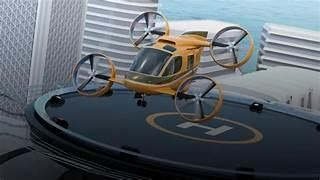
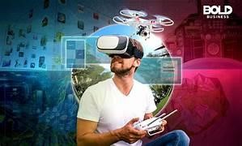

The Promising Future of Drone Technology

Increased Automation
One of the most significant trends in drone technology is increased automation. With advancements in artificial intelligence and machine learning, drones are becoming more autonomous, allowing them to perform complex tasks without human intervention. This increased automation has numerous applications, including improved efficiency in industries such as agriculture and construction. Drones equipped with sensors and cameras can monitor crops and construction sites, providing real-time data that can be analyzed to optimize processes and reduce costs. Imagine a world where drones can navigate complex environments, make decisions on their own, and carry out tasks without human intervention. This could revolutionize industries such as surveillance, agriculture, and infrastructure inspection, making processes faster, safer, and more efficient.
Expanded delivery system

Another trend in drone technology is expanded delivery services. As regulations become more permissive, companies are exploring the use of drones for last-mile delivery of packages and goods. This has the potential to revolutionize the logistics industry, reducing delivery times and costs while also minimizing the carbon footprint of transportation. However, there are still challenges to be addressed, such as safety concerns and the need for efficient air traffic management systems.
Urban Air Mobility (UAM)
Imagine commuting through the sky in a drone-like vehicle, bypassing traffic, and reaching your destination in record time. Urban air mobility (UAM), is another emerging trend in drone technology. This refers to the use of drones and other aerial vehicles for transportation within urban areas. While this concept is still in its early stages, it has the potential to transform the way we think about commuting and transportation. Imagine a world where you could hail a drone like you would a taxi, and be whisked away to your destination in a matter of minutes.
Drone Swarms

Imagine hundreds or even thousands of drones working together seamlessly, coordinating their movements and actions to accomplish complex tasks like one body. A swarm of drones refers to a group of drones that can communicate and coordinate with each other to perform complex tasks. The ability to control multiple drones at once opens up new possibilities for what can be achieved with these versatile machines. From search and rescue missions to entertainment displays and in defense missions, drone swarms have the potential to revolutionize multiple industries.
Integration of drones with emerging technology
Finally, the integration of drones with other emerging technologies is a trend that is expected to continue in the coming years. This includes the use of drones in conjunction with virtual reality, augmented reality, the Internet of Things (IoT), and blockchain technology. These integrations have the potential to enhance the capabilities of drones and open up new possibilities for their use. For example, drones equipped with VR technology could be used for immersive experiences, while drones integrated with blockchain could provide secure, tamper-proof data storage and transmission.
Conclusion

In the coming years, we can expect drones to become an integral part of our lives, transforming industries, enhancing efficiency, and providing innovative solutions. As we embrace the future of drone technology, we must also address safety, regulatory frameworks, and responsible deployment to ensure the seamless integration of drones into our society. Get ready to witness the incredible journey of drones as they redefine the possibilities of technology, propelling us into a future where the sky is no longer the limit.